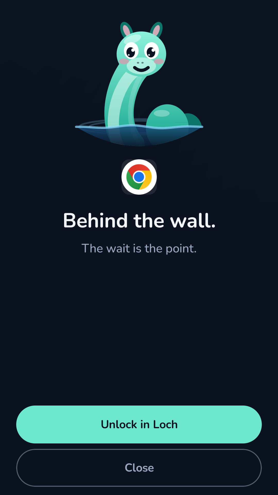
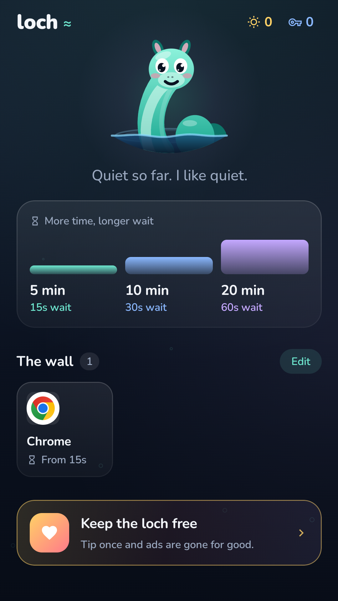

Block distracting Android apps. Pause before you scroll.
Loch is an Android app blocker for the apps you open without thinking. Add a short wait before social media, games, or other distractions, and choose when to let them back in.
Set up your app blocker
- Install Loch from Google Play and follow the onboarding steps.
- Enable Loch in your phone's Accessibility settings after reading the permission explanation.
- Choose the installed apps you want to put behind the wall.
- Open one of those apps. Loch's wall appears, giving you a chance to back out or start a timed unlock.


Short waits, timed access
Wait 15 seconds for 5 minutes of access, 30 seconds for 10 minutes, or 60 seconds for 20 minutes. Each blocked app has its own unlock timer. When its time runs out, the wall returns the next time you reach for it. If notifications are allowed, Loch warns you a minute before the unlock ends.
Leaving Loch during the countdown resets the wait. Backing out is always an option: you do not have to unlock the app just because you started.
Focus while studying or working
Use Loch to put a deliberate pause before the apps that interrupt your attention. It can help you notice habitual phone checking and make more intentional choices about screen time. Loch does not enforce a daily usage quota or block websites separately.
Why does Loch need accessibility permission?
The accessibility service detects when a selected app comes to the foreground and shows Loch's wall over it. It reads the app's package name, not the text, images, or forms on your screen. It does not read keystrokes, and your app selections and unlock records stay on your device. See the Android privacy policy for the complete explanation, including advertising data.
Free to download, with optional tips
Loch contains ads that can play during the unlock wait. The countdown continues behind the ad, though a longer ad can finish after it. Any tip through Google Play removes ads permanently; no subscription is required. Purchase availability depends on Google Play and your region.
Understand the limits
Loch is a self-control tool. Turning off its accessibility service or uninstalling it removes the block. Apps without a launcher entry cannot be selected. It does not manage someone else's device or prevent you from changing your own settings.
Need help with blocking or permissions?
Read Android setup and troubleshooting, or email justanotherflyingmount@gmail.com with your phone model, Android version, and what happened.